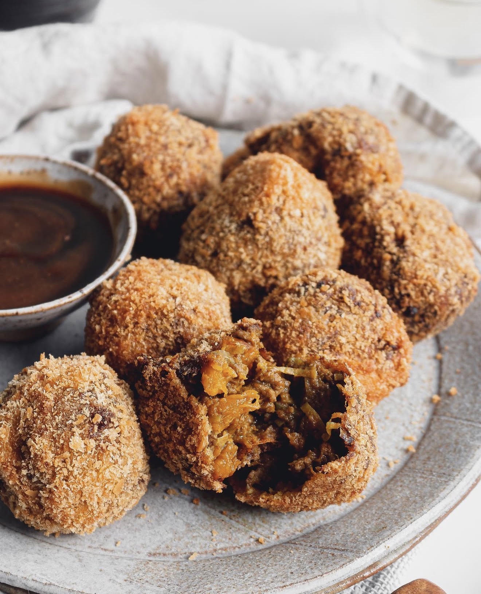

Pumpkin and Beef Korroke Recipe

What is Korroke?
Korokke is a classic Japanese comfort food made from a mixture of mashed potatoes and seasoned minced beef.
The mixture is shaped into patties or oval croquettes, coated in crispy panko breadcrumbs, and deep-fried until golden brown.
It is traditionally served with a tangy korokke sauce, often made by combining tonkatsu (or okonomiyaki) sauce with ketchup and a touch of mustard.
This recipe is my mum's version, and she likes to use pumpkin instead of potato.
The natural sweetness of the pumpkin creates a beautiful contrast with the savoury beef filling,
making these korokke incredibly delicious and one of my favourite family recipes.
Ingredients
Beef & Pumpkin Mix Ingredients
- 2 Tbsp neutral oil
- 750g Japanese Pumpkin, skin removed then cut into 3cm chunks
- 1 x Tbsp butter or Olive Oil
- 1 x Leek, ends trimmed, halved lengthways, thinly sliced
- 1.5 x Tsp Ground Cumin
- 1.5 x Tsp Ground Coriander
- 1.5 x Tsp Tumeric
- 2 x Tbsp plain flour
Coating Ingredients
- 100g x Panko Bread Crumbs
- 2 x Eggs
- 6 x Tbsp Flour
- Deep Frying Oil
Steps
- Heat a large skillet over medium high heat. Once hot, add the oil and the pumpkin. Stir to coat.
- Cover the pan and cook until the first side is golden brown. Flip and cook the other side. Cook until the pumpkin is soft enough to mash and has a deep golden colour throughout.
- Turn off the heat and trasnfer to a heat resistant bowl. Mash the pumpkin so its mostly mashed but it is totally fine to leave a few chunks remaining.
- Using the same skillet, place over medium high heat and add the butter or olive oil. Add the leeks and cook until soft, about 3-5 minutes.
- Add the beef into the pan and cook until the beef is brown and fully cooked and all the juices have evaporated. Add in the spices and stir to combine.
- Add the pumpkin into the beef and leek mix and stir until everything is mixed evenly. Turn off the heat and add in the flour and mix. Add more flour if there is still a lot of excess moisture and filling isn't sticking together.
- Scoop a heaped tablespoon of the mixture and place on a large plat. Repeat for all the reminaing mixture. Place the mixture in the fridge to let it cool for 15 minutes.
- Place panko on a flat plate, flour on another plate and the eggs in a bowl. Whisk the eggs until the egg whites and yolk are evenly mixed together.
- Rub a small amount of oil on your hands and roll out the portioned out mixture into balls. Coat in flour, then dip into the egg. Shake off the excess egg then place the korroke ball into the panko. Make sure it is covered all over. You can gently pat the panko breadcrumbs so it sticks to the ball.
- Repeat the above step for the remaining mixture. You should now have about 20-25 korroke balls.
- Pour in the deep frying oil in a deep dutch oven or stainless steel pot. Heat over high heat until the oil reaches 190 degrees. If you dont have a thermometer to check the temperature, sprinkle a few breadcrumbs into the oil and if it bubbles right away, then your oil is hot enough to fry.
- In Batches, add the korroke and fry untul they're a deep golden brown. Flip occasionally to prevent burning. Transfer the korroke balls on a paper towel lined plate. Repeat for the reamining korroke balls.
- Mix the sauce ingredients in a small bowl. Dip the korroke balls into the sauce and enjoy!